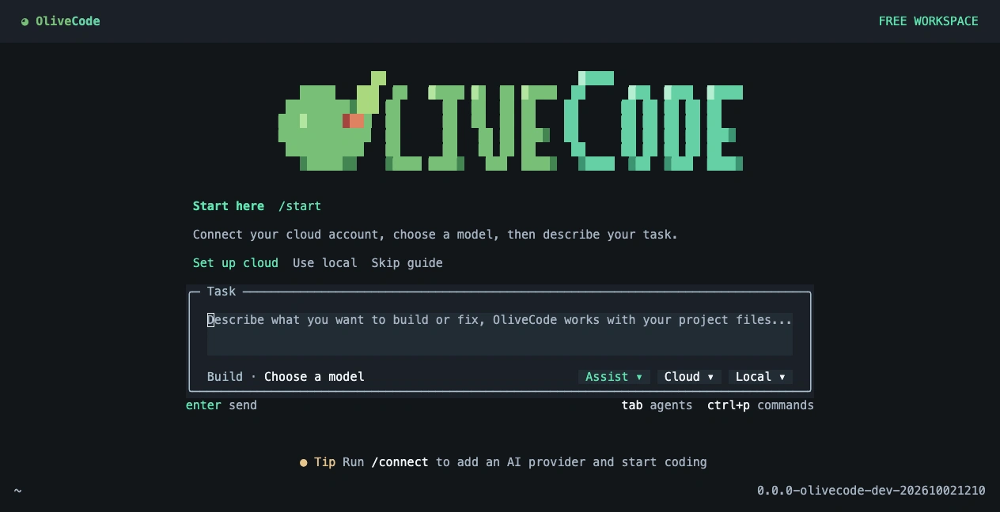

Your first OliveCode task
One task.
Ten checks.
Fix a small function in a disposable project. Check the result yourself.
Get the starter ZIPBefore you start
Node.js 18+ and OliveCode with a configured model. No project dependencies.
Start with the failures.
Unzip the project and open a terminal in that folder. Run the existing tests before asking an agent to change anything.
node --test slug.test.mjsStarting fixture: 4 pass, 6 fail. The failures are intentional.
Give it one clear job.
Run olivecode in the same folder. Choose your configured model, then paste this request.
Cloud quotas still apply. Local models need suitable hardware and reliable tool use.
Fix slug.mjs so all existing slug.test.mjs cases pass.
Read the files and change only slug.mjs.
Run node --test slug.test.mjs and report the actual results.
Do not modify the tests.Use only this example folder. You do not need your own project or private code.
Check what changed.
Run the tests yourself. The target is ten passing checks with the original test file unchanged.
Review the diff if you used Git. With a ZIP, compare the test file with an untouched copy.
node --test slug.test.mjs
git diff -- slug.mjs slug.test.mjsA target, not a promised result. These checks cover a small ASCII slug function, not general coding performance.
Read the source and exact requirements ↗Help make the first run better.
We’re looking for five people to try this task and tell us where they get stuck. You can stop at any point. A failed setup is useful feedback too.
Send your OS, OliveCode version, model, test result and the step that caused trouble. If you’re happy to hear from us once about a second task, say so.
GitHub feedback is public and needs an account. Prefer private feedback? Email the project.
Leave out API keys, private code and personal information. No recording is required.
Checked on a real run.
On 22 October 2026, a maintainer ran this Node task with OliveCode 0.1.0 and OpenRouter’s Laguna S 2.1 free model. An independent check found all ten tests passing. The original tests, package file and verification skill were unchanged.
The successful run used an existing provider connection and explicit model configuration after an initial setup attempt failed. This does not verify fresh signup or general coding performance.
Inspect the code and test evidence ↗Earlier video example
The earlier Bun/TypeScript example is a condensed replay of recorded tool events, not a live terminal recording or this Node run. Watch the disclosed replay ↗.
